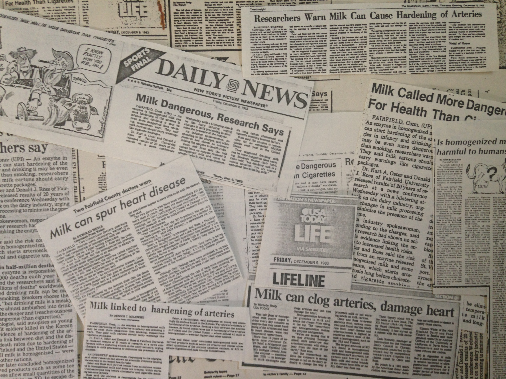

How is it possible? Even the most reputable physicians never guarantee anything.
It took nothing less than Nobel Laureate-worthy discoveries by three, medical pioneers to demonstrate:
“Everything you’ve been told about angina is based on MYTHS and is DEAD WRONG.”
Virtually everyone - from your cardiologist to every director of every heart association in existence to every website - parrots that clogged arteries result in chest pain, yet – if you can fathom it - cause and effect has never been proven!
No pain receptors or “nociceptors” have ever been found in the heart or in coronary arteries that are supposedly “switched on” to trigger pain when the oxygen supply to the heart is reduced.
Amazing, is it not?
Without proof of a link between clogged arteries and chest pain, existing treatments for angina are based on conjecture rather than science. IT’S WHY EXISTING TREATMENTS DON’T REMEDY ANGINA and never will.
Take the New York Times, banner headline:
“Unbelievable: Heart Stents Fail to Ease Chest Pain”
“A procedure used to relieve chest pain in hundreds of thousands of heart patients each year is useless…” (NYT, Nov. 2, 2017).Curious, is it not? Yet, such is the verdict of science, based on the milestone, medical study published in the reputable, British medical journal, The Lancet.
In fact, every year, more than half a million people, worldwide, receive stents for angina pectoris chest pain at a cost of billions of dollars, euros and yen – yet, it turns out, after millions of patients have had them inserted, covering several decades, that it’s a totally, worthless procedure for remedying angina!
The genius of leading minds in cardiology are conceding:
“We have to re-examine what we’re doing.”
In simple kitchen talk they’re saying: “We’re clueless!”
Are you beginning to understand that existing treatments of angina are Band-Aids, at best, and most are little more than hot air and wishful thinking for profit?
To be blunt, the existing treatment of angina is a racket.
Ask yourself:- If clogged arteries cause angina, why do one-third of angina patients, including many vegetarians, have perfectly healthy, coronary arteries?
- Why do another one-third have only insignificant lesions or plaque – not enough to significantly reduce the oxygen supply to the heart?
Simple common sense says that chest pain is caused by something else, not clogged arteries or atherosclerosis.
To summarize, 250 years after angina pectoris was first described by William Heberden, a thorough review of medical literature upholds that science is still in search of a remedy. 250 years ago, Mozart was only getting tuned up and Benjamin Franklin was trying to avoid getting electrocuted flying kites in thunderstorms!
In the words of cardiologist K.A. Oster:
“A remedy for angina pectoris has eluded science [all of this time] because researchers have been barking up the wrong tree!”
If you take a few, more minutes to read on, you’ll discover that a solution for angina exists - one that really works.

My name is Nicholas Sampsidis, the creator of the Table 10 - Chest Pain Protocol. Once upon a time, I was where you are, today.
Once upon a time, I was where you are, today.
I suffered from angina, from the age of 14. Student-athlete that I was, the pain was always there, straight through soccer, track, and a few high school and college records. With your indulgence, here’s one for posterity.
Back then, arm and chest discomfort delayed the onset of sleep, especially, during stress. I probably don’t need to remind you what tossing and turning is like when you need to have a good night’s sleep for a big day. It wasn’t uncommon for the pain to linger after breakfast or after lunch.
One morning, among teenage friends in the student lounge, it struck deep. Knife-like, the pain was sharper than ever before. “Relax, stay calm, don’t panic… breathe evenly,” I told myself, attempting to escape the clutches of an apparent heart attack. Instinct didn’t allow mentioning it. Peer pressure, you know. Teenage ridicule can be worse than death. Survival required getting through the event on my own.
The personal quest to determine the cause of chest pain began, that day, despite a physician pronouncing: “Enviable, good health.”
Searches through college stacks eventually led me to the team of world-renown cardiologist K.A. Oster and Fairfield University Professor D.J. Ross.
“Without them providing direction, I would not be here, today – no exaggeration.”
Specifically, I learned from Oster that not only did I have atherosclerosis – 4.5 on a scale of 5.0, with 5.0 being the worst - but I also had angina pectoris – two, distinct presentations, according to him.
I was 28 years old!
We hit it off, discussing the biochemistry behind atherosclerosis and angina, which led to joint collaboration and to the publication of our book HOMOGENIZED MILK MAY CAUSE YOUR HEART ATTACK: THE XO FACTOR. Hundreds of press clippings are indicative of the stir it created.
Oster’s recommendations - based on his thesis that angina is caused by inflamed nerves servicing the heart and not by occluded arteries - helped me overcome angina in the next, several months. Atherosclerosis took longer, nonetheless, several years later, blood analyses confirmed that atherosclerosis was on the wane. In short, healing.
The Table 10 END CHEST PAIN PROTOCOL incorporates not only how I overcame angina but also how Oster and I remedied it in no small number of angina victims, spanning some 50 years. “The proof is in the pudding!”

Initially, the solution was drug-oriented, considering Oster was the Clinical Pharmacologist and Medical Director, for several decades, of McKesson Laboratories, of McKesson Corporation (a Fortune 500 company, today - the 6th highest, revenue-generating firm in the US).
High dosages of the drug Allopurinol were used to block angina inflammation but very harmful side-effects from long-term use, eventually, excluded it. Subsequently, Oster invented a solution using a vitamin as a drug (as a competitive inhibitor of the inflammatory enzyme, xanthine oxidase). It blocked inflammation better, than Allopurinol, while providing positive rather than negative, side-effects.
After Oster and Ross retired, I improved Oster’s Model-T solution by adding protocol details that, among other things, also regenerate myelin, (the damaged insulation of nerves). The Table 10 END CHEST PAIN PROTOCOL became an all-natural solution that purrs like a Rolls Royce engine.
Today, you can take charge of your health and end angina chest pain, for good, by implementing the Dos and Don’ts in the Table 10 End Chest Pain Protocol. It’s a step-by-step plan, simple enough for anyone with basic, kitchen skills to implement.
What is the Table 10 Chest Pain Protocol?
The Table 10 Chest Pain Protocol incorporates the best of what has been learned to end chest pain by way of practice in no small number of angina victims, covering nearly 50 years.
Initially, the solution was pharmaceutically oriented, considering Oster’s position as Clinical Pharmacologist and Medical Director of McKesson Laboratories, of McKesson Corporation (a Fortune 500 company, today - the 6th highest, revenue-generating firm in the US). Allopurinol was used to block inflammation but harmful side-effects from long-term use excluded it.
Knowing what faucets to turn on or off to block inflammation and restore myelin in nerves, our team turned to using a vitamin as a drug and, eventually, an all-natural solution.
What, Specifically, is the Table 10 End Chest Pain Protocol?
- The Protocol is the Action Plan for ending chest pain, for good. View it as a simple, comprehensive course that teaches you how to take active charge of your health, starting with specific changes to your grocery store shopping list.
- The Protocol is centered on a unique diet to heal inflamed nerves. It’s not a “one size fits all” solution. Instead, it’s customized according to your blood type and your metabolic type. Metabolic type is determined by filling out a questionnaire that’s provided.
- The Protocol is also based on a specific combination of supplements. What supplements you take and when depends on your blood type and your metabolic type. It’s all quite simple but if you have questions that are not answered in the FAQ section, you can always get them answered by contacting the support desk.
What You Get
- A customized diet plan for 90 days.
- A 90-day supply of supplements, delivered to your door, within 5-8 business days, depending on where you live. Outside the US, shipping times take longer. Not all supplements are sent from the same manufacturer or distributor, which assures objectivity, independence, and, most importantly, getting the best of what there is in the market, today.
- A customized, daily schedule for taking supplements.
- Access to endchestpain.com social media channels, including Facebook Live (live-streaming, video access to questions and answers).
Expectations- Table 10 End Chest Pain Protocol:
- Most persons experience a significant reduction of chest pain in as little as a few days up to two weeks.
- Remedying damage to nerves responsible for the chest pain is a slower process but it can be accomplished within 3 months. By months 2 and 3, you should not experience chest pain.
- After the 3rd month, an option exists to pursue the Protocol on your own. Most persons, despite being free of chest pain, opt for oversight and hand-holding - recommended during months 3-12.
You Already Know the Cost of Existing Treatments
Stents:For patients without health insurance, total costs for a stent are typically $11,000-$41,000, or more, depending on the type of stent and length of hospital stay. Medicare generally pays $15,000 per treatment, which can leave you with a $20,000-plus out-of-pocket bill and, it cannot be emphasized enough, for a procedure that doesn’t work!
Medications:With more than two dozen, angina medications being prescribed, worldwide, plus as many generic variants, prices with insurance or without it run all across the board, from no cost to several hundred dollars per month. Most importantly, as with stents, no medication exists that can remedy angina. Medications are a life sentence that can cost you tens of thousands of dollars in the long run.
What Some Physicians and Patients Have Said
Dear Nicholas,Getting better acquainted with material provided by you has allowed me to drastically change my position on the mechanisms of the development of some forms of pathology.
Your views regarding the synergistic action of phospholipases and XO, and particularly the role of the latter allows to establish a global base explaining the [beneficial] effects of dietary supplements, (including substances of herbal origin). Consistent with such, I understand now that the synergistic action of the two enzymes is at the heart of mechanisms leading to the development of a number of diseases and to treat them comprehensively - both through the inhibition of the enzymes and by limiting their intake from the external environment, including intake from dairy products.
In any event, I see unmistakable promise within the framework of views developed by you. As a result, we are now planning to return to earlier proposals from provincial municipalities, which, in the past, routinely requested that we address public health issues of populations in their jurisdictions. We delayed such work not so much because we were occupied but because of a lack of knowledge of how to solve them – something that you have now helped us to overcome.
I'd be honored to work with you.
Yours truly, O.G. Makeev, MD Professor, Department of Biology and Genetics; Ural Medical Academy, Yekaterinburg; Laboratory of Molecular Medical Technology, Central Ural Research Center, Russian Academy of Medical Sciences (PAMH) and the Government of the Sverdlovsk region (Head).
Thank you for helping resolve my son’s neuropathy and chest pains, something no one else could!
You saved my life!
I’m astounded with how quickly my chest pain and the pain in my arm went away.
The Cost of the Table 10 End Chest Pain Protocol
The good news is that the electronic, tech age allows a digital product to reach a significantly, wider audience and to help more people at a cost that’s less than private, one-on-one, consultations, saving everyone time and money.
If I would have known about a dietary solution that works to end chest pain, 40 years ago, I’m not sure what sum I might have paid but, without much doubt, it would have been more than the $675 that the protocol costs, today, a price that includes the 3-month supply of specific, targeted supplements, delivered.
In fact, a person with angina has nothing to lose because the program is backed by a full, satisfaction guarantee. If the protocol does not eliminate chest pain after three months, request a full refund and you can keep any remaining supplements.
- Save time and money
- Save your health
- Save your family the burden of caring for an invalid
Two words of caution:
- The protocol is not recommended for anyone with a cancer diagnosis because remedying damaged nerves requires the opposite - a diet that promotes growth. Anything promoting the growth of cells is counterproductive in cancer.
- Pregnant women as well as women striving to get pregnant should never use anti-inflammatory supplements or herbs like parsley, sage, rosemary, oregano, celery, or thyme, which are part of the Table 10 End Chest Pain Protocol, at the start. Such herbs inhibit not only inflammation but also growth, which can have a negative effect on a growing fetus.